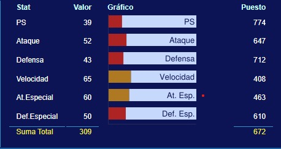
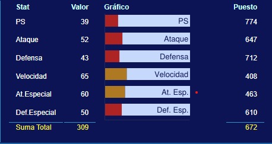

- Charmander
  
en este caso tenemos a charmander, como en el resto de los iniciales en su forma base no cuenta con muchos stats, este es de tipo fuego
|
- Charmeleon

aqui tenemos a charmeleon el cual gana velocidad y atk esp convirtiendolo en una buena opción de tipo fuego ofensiva para el mid-game
|
- Charizard
 finalmente tenemos a charizard el cual sin contar sus megaevoluciones cuenta con una mejora en velocidad y atk especial convirtiendolo en un muy buen atacante, además gana el tipo volador el cual lo proteje de la debilidad ante el tipo tierra, sin embargo crea una debilidad ante el tipo electrico y una debilidad x4 contra el tipo roca.
|
- MegaCharizard X

En el caso de Charizard X encontramos una mejora en ambos tipos de ataque convirtiendolo en un atacante híbrido muy útil, además este intercambia el tipo volador por el tipo dragón teniendo como debilidades el tipo hada, roca, tierra y dragón.
|
- MegaCharizard Y

En el caso de Charizard Y encontramos una gran mejora en el ataque especial convirtiendolo en un letal atacante
|